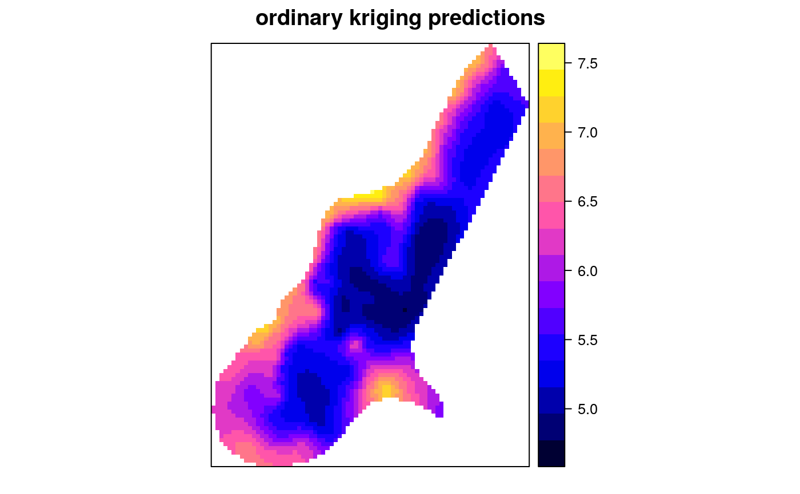
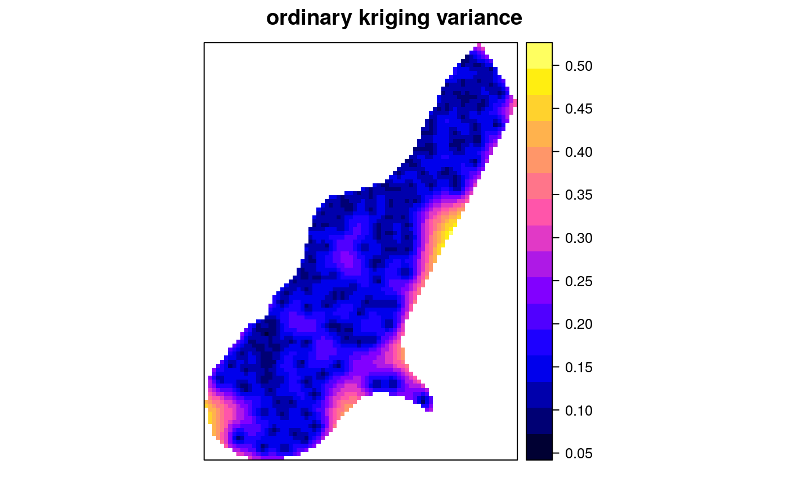
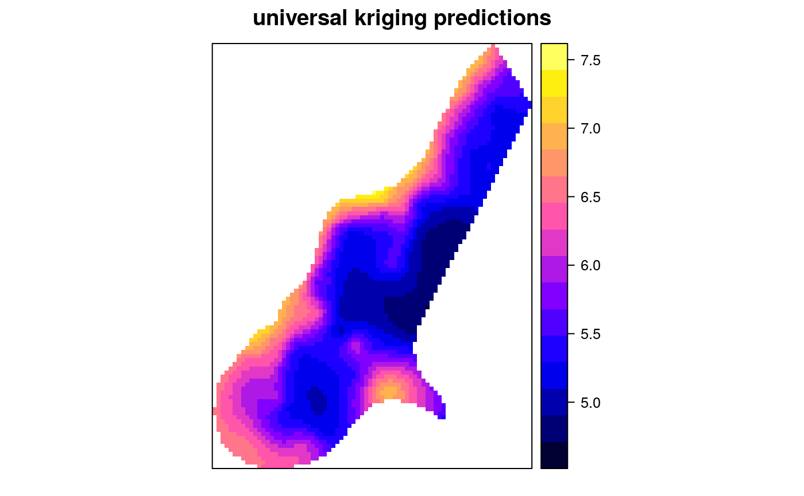
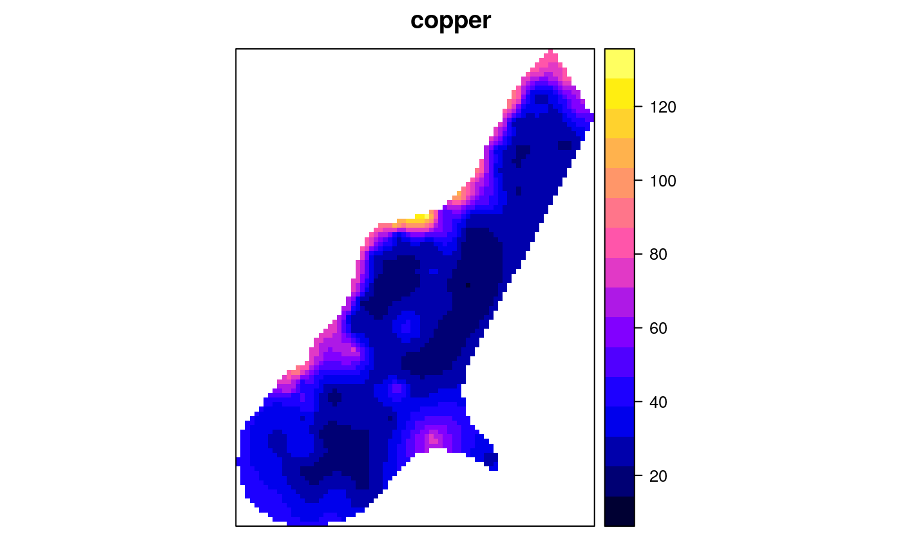

krige.RdFunction for simple, ordinary or universal kriging (sometimes called external drift kriging), kriging in a local neighbourhood, point kriging or kriging of block mean values (rectangular or irregular blocks), and conditional (Gaussian or indicator) simulation equivalents for all kriging varieties, and function for inverse distance weighted interpolation. For multivariable prediction, see gstat and predict
krige(formula, locations, ...) krige.locations(formula, locations, data, newdata, model, ..., beta, nmax = Inf, nmin = 0, omax = 0, maxdist = Inf, block, nsim = 0, indicators = FALSE, na.action = na.pass, debug.level = 1) krige.spatial(formula, locations, newdata, model, ..., beta, nmax = Inf, nmin = 0, omax = 0, maxdist = Inf, block, nsim = 0, indicators = FALSE, na.action = na.pass, debug.level = 1) krige0(formula, data, newdata, model, beta, y, ..., computeVar = FALSE, fullCovariance = FALSE) idw(formula, locations, ...) idw.locations(formula, locations, data, newdata, nmax = Inf, nmin = 0, omax = 0, maxdist = Inf, block, na.action = na.pass, idp = 2.0, debug.level = 1) idw.spatial(formula, locations, newdata, nmax = Inf, nmin = 0, omax = 0, maxdist = Inf, block = numeric(0), na.action = na.pass, idp = 2.0, debug.level = 1) idw0(formula, data, newdata, y, idp = 2.0)
| formula | formula that defines the dependent variable as a linear
model of independent variables; suppose the dependent variable has name
|
|---|---|
| locations | object of class |
| data | data frame: should contain the dependent variable, independent variables, and coordinates, should be missing if locations contains data. |
| newdata | object of class |
| model | variogram model of dependent variable (or its residuals),
defined by a call to vgm or fit.variogram; for |
| beta | for simple kriging (and simulation based on simple kriging): vector with the trend coefficients (including intercept); if no independent variables are defined the model only contains an intercept and beta should be the simple kriging mean |
| nmax | for local kriging: the number of nearest observations that should be used for a kriging prediction or simulation, where nearest is defined in terms of the space of the spatial locations. By default, all observations are used |
| nmin | for local kriging: if the number of nearest observations
within distance |
| omax | see gstat |
| maxdist | for local kriging: only observations within a distance
of |
| block | block size; a vector with 1, 2 or 3 values containing the size of a rectangular in x-, y- and z-dimension respectively (0 if not set), or a data frame with 1, 2 or 3 columns, containing the points that discretize the block in the x-, y- and z-dimension to define irregular blocks relative to (0,0) or (0,0,0)---see also the details section of predict. By default, predictions or simulations refer to the support of the data values. |
| nsim | integer; if set to a non-zero value, conditional simulation
is used instead of kriging interpolation. For this, sequential Gaussian
or indicator simulation is used (depending on the value of
|
| indicators | logical, only relevant if |
| na.action | function determining what should be done with missing values in 'newdata'. The default is to predict 'NA'. Missing values in coordinates and predictors are both dealt with. |
| debug.level | debug level, passed to predict; use -1 to see progress in percentage, and 0 to suppress all printed information |
| … | for krige: arguments that will be passed to gstat;
for |
| idp | numeric; specify the inverse distance weighting power |
| y | matrix; to krige multiple fields in a single step, pass data
as columns of matrix |
| computeVar | logical; if TRUE, prediction variances will be returned |
| fullCovariance | logical; if FALSE a vector with prediction variances will be returned, if TRUE the full covariance matrix of all predictions will be returned |
locations specifies which coordinates in data refer to spatial coordinates
Object locations knows about its own spatial locations
used in case of unconditional simulations; newdata needs to be of class Spatial
Function krige is a simple wrapper method around gstat
and predict for univariate kriging prediction and conditional
simulation methods available in gstat. For multivariate prediction or
simulation, or for other interpolation methods provided by gstat (such as
inverse distance weighted interpolation or trend surface interpolation)
use the functions gstat and predict directly.
Function idw performs just as krige without a model being
passed, but allows direct specification of the inverse distance weighting
power. Don't use with predictors in the formula.
For further details, see predict.
if locations is not a formula, object of the same class as
newdata (deriving from Spatial); else a data frame
containing the coordinates of newdata. Attributes columns
contain prediction and prediction variance (in case of kriging) or the
abs(nsim) columns of the conditional Gaussian or indicator
simulations
krige0 and idw0 are alternative functions with reduced
functionality and larger memory requirements; they return numeric vectors
(or matrices, in case of multiple dependent) with predicted values only;
in case computeVar is TRUE, a list with elements pred and
var is returned, containing predictions, and (co)variances (depending
on argument fullCovariance).
N.A.C. Cressie, 1993, Statistics for Spatial Data, Wiley.
Pebesma, E.J., 2004. Multivariable geostatistics in S: the gstat package. Computers \& Geosciences, 30: 683-691.
Daniel G. Krige is a South African scientist who was a mining engineer
when he first used generalised least squares prediction with spatial
covariances in the 50's. George Matheron coined the term kriging
in the 60's for the action of doing this, although very similar approaches
had been taken in the field of meteorology. Beside being Krige's name,
I consider "krige" to be to "kriging" what "predict" is to "prediction".
library(sp) data(meuse) coordinates(meuse) = ~x+y data(meuse.grid) gridded(meuse.grid) = ~x+y m <- vgm(.59, "Sph", 874, .04) # ordinary kriging: x <- krige(log(zinc)~1, meuse, meuse.grid, model = m)#> [using ordinary kriging]# simple kriging: x <- krige(log(zinc)~1, meuse, meuse.grid, model = m, beta = 5.9)#> [using simple kriging]# residual variogram: m <- vgm(.4, "Sph", 954, .06) # universal block kriging: x <- krige(log(zinc)~x+y, meuse, meuse.grid, model = m, block = c(40,40))#> [using universal kriging]# krige0, using user-defined covariance function and multiple responses in y: # exponential variogram with range 500, defined as covariance function: v = function(x, y = x) { exp(-spDists(coordinates(x),coordinates(y))/500) } # krige two variables in a single pass (using 1 covariance model): y = cbind(meuse$zinc,meuse$copper,meuse$lead,meuse$cadmium) x <- krige0(zinc~1, meuse, meuse.grid, v, y = y) meuse.grid$zinc = x[,1] spplot(meuse.grid["zinc"], main = "zinc")# the following has NOTHING to do with kriging, but -- # return the median of the nearest 11 observations: x = krige(zinc~1, meuse, meuse.grid, set = list(method = "med"), nmax = 11)#> [median estimation]# get 25%- and 75%-percentiles of nearest 11 obs, as prediction and variance: x = krige(zinc~1, meuse, meuse.grid, nmax = 11, set = list(method = "med", quantile = 0.25))#> [0.25-quantile estimation]# get diversity (# of different values) and mode from 11 nearest observations: x = krige(zinc~1, meuse, meuse.grid, nmax = 11, set = list(method = "div"))#> [within-neighbourhood diversity and modus]